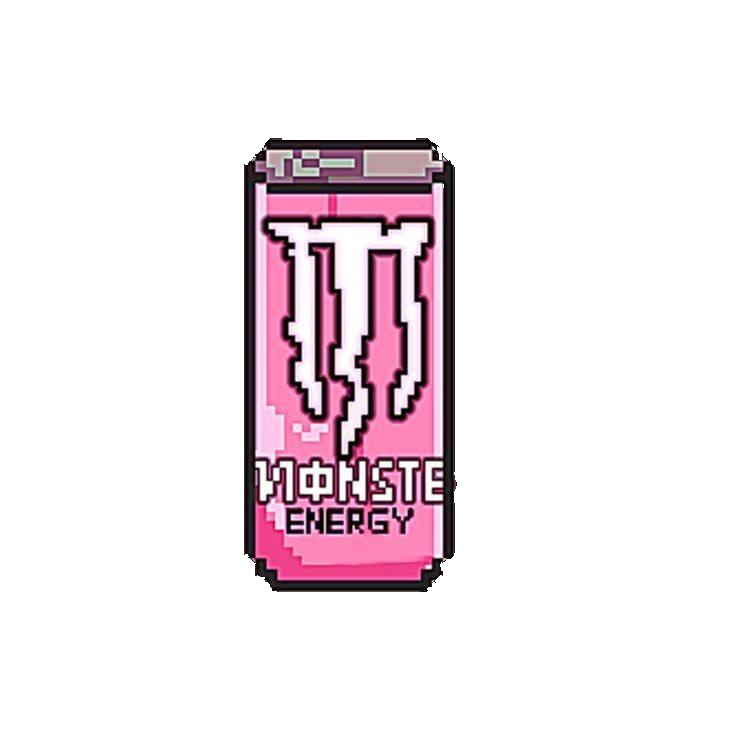

Японский чай
Нежный магазин японского чая,
где традиции встречаются с эстетикой
сакуры. Выбирай любимый вкус
и устраивай чайную церемонию дома.

Нежный магазин японского чая,
где традиции встречаются с эстетикой
сакуры. Выбирай любимый вкус
и устраивай чайную церемонию дома.
Sakura Tea — это небольшой магазин японского чая.
созданный для любителей уютных вечеров и красивой японской культуры.
Мы предлагаем разные виды чая, которые подойдут как для спокойного утра,
так и для приятной встречи с друзьями.
В нашем магазине можно найти матчу, сенчу и чай с ароматом японской сакуры.
Мы стараемся выбирать качественные продукты и красиво оформлять каждый заказ.
Если вы не знаете, какой чай выбрать,
мы сможем его подобрать!

Нежный чай для спокойного утра
и приятного начала дня.

Лёгкий цветочный аромат, который
напоминает о весенней Японии.

Классический японский чай
для уютных вечеров и тёплых встреч.
Мы выбираем чай с вниманием
к его вкусу и качеству.
Каждая упаковка создана в
нежном японском стиле..
Наш чай помогает создать
спокойную и приятную атмосферу.